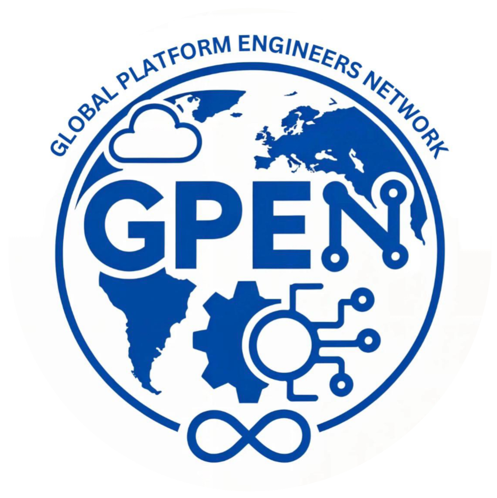

How modern open-source tools — Checkov, Rover, and Infracost — shift security, visibility, and cost governance left into the developer workflow.
Why teams struggle with unreviewed IaC
Catching issues at code-writing time
750+ policies, misconfig detection, deep dive
Interactive Terraform visualization & benefits
PR-level spend + paid vs free rationale
Why these tools beat every alternative
Supply chain, privacy & CVE posture
What else exists & why we didn't choose it
End-to-end unified pipeline walkthrough
Outcomes, metrics & action items
Open S3 buckets, unencrypted DBs, over-privileged IAM slip through manual review into production.
Changes merged without cost visibility. Teams find expensive resources only on the monthly invoice.
Complex module trees make it impossible to understand what terraform plan will actually do.
CIS & FinOps policies enforced only by manual audits — creating sprawling compliance debt.
IDE inline cost & lint
Checkov + Rover + Infracost
Block on policy failures
Compliant & cost-approved
Misconfig blocked at PR, not post-breach.
Full resource graph in every PR.
Budget impact = part of code review.
Static Analysis & Policy Engine for IaC · Benchmark: 93/100
Open-source static analysis that scans IaC for misconfigurations, security vulnerabilities & compliance violations before deployment — against 750+ built-in policies aligned to CIS Benchmarks & AWS Foundations.
🔓 Apache 2.0 · Maintained by Prisma Cloud (Palo Alto Networks) · ⭐ 8,800+ GitHub stars · 409 contributors
*:*)checkov pre-commit hook runs instantly
SARIF annotations inline in PR diff
HIGH severity = merge blocked
Only compliant code reaches prod
Interactive Terraform Plan Visualizer · Benchmark: 92/100
Open-source (MIT license) Terraform visualizer. Rover transforms a terraform plan into an interactive web-based graph showing every resource, module, dependency, local, and output — running as a Docker container, zero host installation, served at localhost:9000.
🔓 MIT license · by @im2nguyen (community project) · ⭐ 3,300+ GitHub stars · last release v0.3.3
Resource State Overview — flat list of all resources
Clustered module view with hierarchy
Directed dependency graph
rover.zip export for offline sharingrover.zip artifact per PRNew module, new resource, modified count
terraform plan -out plan.binSerialised to plan.json, no live state needed
rover.zipUploaded as CI artifact, linked in PR
Click nodes, see full dependency chain
Cloud Cost Intelligence for IaC · Benchmark: 96/100
Open-core (CLI is Apache 2.0, but requires Infracost’s proprietary cloud pricing API — not fully self-hostable). Infracost shifts cloud costs left — into the engineering workflow. Cost estimates arrive in the developer IDE and PRs before any infra is provisioned. FinOps policy enforcement requires the paid Cloud tier.
🔓 Open-core (CLI = Apache 2.0; pricing API = proprietary SaaS) · Cloud dashboard is paid · ⭐ 12,300+ GitHub stars · 107 contributors
One accidentally-provisioned db.r6g.4xlarge RDS = ~$1,300/month. Infracost surfaces this before merge. Even one catch per quarter justifies the investment.
Free CI tier gives full value at zero cost.
Scored 0–100 across real-world dimensions evaluated in our environment.
| Tool | Policy Coverage | IaC Support | CI Speed | Custom Rules | License | Score |
|---|---|---|---|---|---|---|
| ✅ Checkov | 94 |
95 |
88 |
90 |
Apache 2.0 | 93 |
| tfsec | 72 |
60 |
85 |
65 |
MIT | 72 |
| Snyk IaC | 85 |
80 |
82 |
70 |
Proprietary | 79 |
| Tool | Interactivity | CI-ready | No Account Needed | Module Support | Score |
|---|---|---|---|---|---|
| ✅ Rover | 95 — Vue.js interactive | rover.zip artifact | Yes | Full hierarchy | 92 |
| Pluralith | 88 — full diagram | Paid CI tier | Account required | Yes | 74 |
| Blast Radius | 70 — basic graph | No native CI | Yes | Partial | 62 |
| Tool | PR Integration | IDE Plugin | FinOps Policies | Privacy-Safe | Free for CI | Score |
|---|---|---|---|---|---|---|
| ✅ Infracost | Native PR comment | VS Code + JetBrains | Cost estimates only (FinOps policies = paid Cloud tier) | No creds sent | Free (1,000 runs/mo) | 96 |
| AWS Cost Explorer | No | No | No | AWS login needed | No CI integration | 42 |
| OpenCost | No | No | Limited | Yes | Runtime only | 55 |
Supply chain, data privacy, CVE history & runtime permissions — all three tools examined.
Published to PyPI by Bridgecrew (Palo Alto Networks). Signed releases, pinned deps, SBOM available. 30k+ GitHub stars, auditable source.
Runs fully offline. No IaC code, state, or secrets sent externally. Prisma Cloud integration is optional & opt-in only.
0 critical CVEs in last 12 months. Part of Palo Alto PSIRT vulnerability program. Actively patched.
Read-only file-system access. No network calls during scan. Air-gapped support via --no-external-checks.
Open-source MIT. Docker image on GHCR. Pin to specific SHA digest in CI to prevent supply-chain substitution.
Runs locally in Docker. Terraform plan JSON never leaves your network. Visualization at localhost — no SaaS uploads.
Plan JSON may contain sensitive values. Treat rover.zip as a confidential CI artifact — restrict download permissions.
Mark secrets as sensitive = true in Terraform variables. Use a secrets manager (Vault, AWS Secrets Manager) instead of hardcoding values. Restrict CI artifact download permissions to authorised team members only.
Apache 2.0 OSS. Signed binaries with checksums. GitHub Actions SHA-pinned. SBOM published per release.
No cloud credentials ever sent. Only resource types + quantities go to pricing API. No account names, ARNs, or config values.
Infracost Inc. is SOC 2 Type II certified. Penetration tested annually. Bug bounty on HackerOne.
Infracost Cloud can be self-hosted on-premises. Pricing DB syncs offline weekly for air-gapped environments.
| Category | Our Choice | Why not alternatives |
|---|---|---|
| 🛡 Security | Checkov | tfsec: Terraform-only. Snyk: proprietary. KICS: fewer policies. Trivy: no YAML custom rules. |
| 🗺 Visualisation | Rover | Pluralith: paid CI. Blast Radius: static only. Inframap: no standalone export. |
| 💰 Cost | Infracost | AWS Cost Explorer: reactive post-deploy. OpenCost: k8s runtime only. Cloudcraft: no TF plan integration. |
| 🔐 Secrets | Checkov | Checkov already covers IaC hardcoded secrets — no extra tool needed. |
💡 All three chosen tools are free for CI pipelines. Infracost paid tiers (Starter $250/mo, Cloud $1,000/mo) only needed for org-wide dashboards, FinOps policies & guardrails.
Runs checkov -d . --output sarif. Fails on HIGH. PR gets inline annotations. Soft-fail for LOW/MED.
terraform plan -out plan.bin → plan.json, Rover Docker → rover.zip CI artifact. Link posted to PR.
infracost diff --path . --compare-to main → PR comment with cost delta, tagging violations, FinOps findings.
Role: Security & compliance gatekeeper
When: Every commit & PR
Value: 750+ policies, zero misconfig in prod
Score: 93/100 · Free (Apache 2.0)
Role: Visual plan explorer & documentation
When: Every Terraform plan in CI
Value: Interactive graph, confident reviews
Score: 92/100 · Free (MIT)
Role: Cost intelligence & FinOps enforcement
When: IDE + every PR
Value: Cost diff, tagging policy, zero bill surprises
Score: 96/100 · Free for CI (1,000 runs/mo)
Add Checkov as required CI check on IaC repos (fail on HIGH)
Integrate Infracost into GitHub Actions with PR comment step (free up to 1,000 runs/mo)
Add Rover artifact generation to Terraform plan step for all PRs
Define FinOps tagging policy in Infracost config & cost thresholds